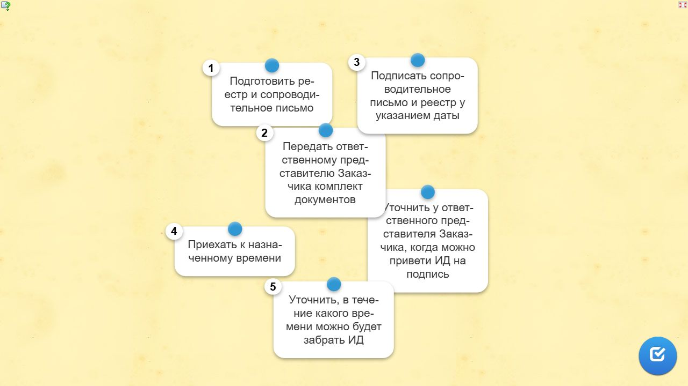
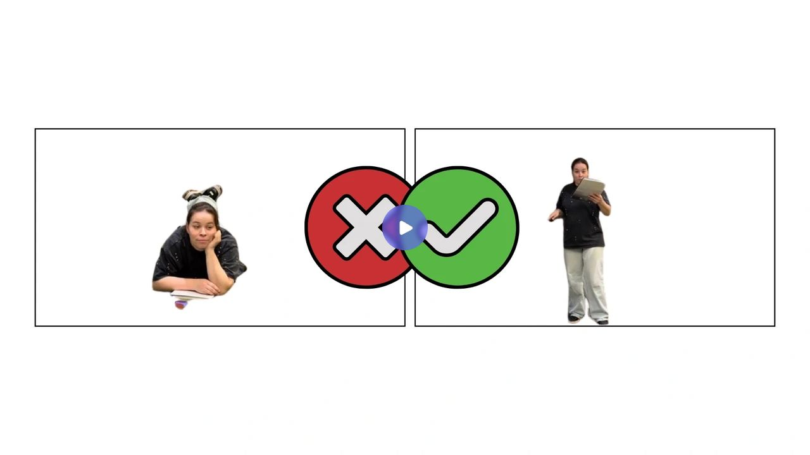
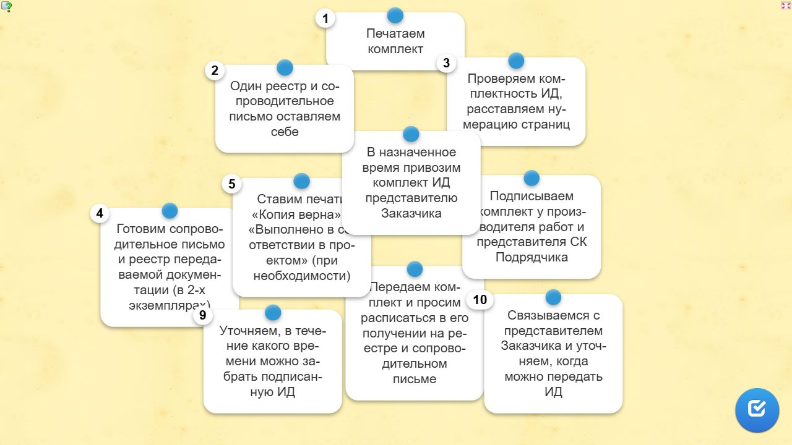

Как сдать объемы выполненных работ заказчикуЛокальный архив курса
МИКРОКУРСЫ. 2026 · Как сдать объемы заказчику
Передаем исполнительную документацию на подпись
Вера СафуановаЭксперт строительного контроля с опытом работы в строительной сфере более 15 лет
Когда мы получили долгожданное согласование ИД и получили подверждение о согласовании КС-3 и КС-2, самое время подписать пакет документов.
Почему не стоит откладывать эту работу? Представьте, ответственный инженер находится в отпуске или вовсе уволен. Тогда всю исполнительную документацию придется переделывать для нового сотрудника. Для этого придется оформлять новый приказ, а назначенный инженер может с недоверием отнестись к исполнительной документации. Так процесс ее подписания затянется на длительное время.
Итак, сначала уточните у ответственного представителя СК формат подачи исполнительной документации на подпись: нужно ли предоставить все экземпляры АОСР + всю остальную комплектацию в одном экземпляре, или же каждый том комплекта следует формировать и печатать отдельно. Эти условия могут быть прописаны в договоре.
Давайте сразу попрактикуемся, чтобы в реальной работе вы правильно передали мне на подпись готовый комплект.
Исходные карточки для самопроверки. Локальная страница не оценивает ответы.
1. Чего не хватает в комплекте, который передается на подпись Заказчику? (несколько вариантов ответа)
ТТН на материал
Печать «Копия верна» на паспорте
Нумерация страниц
Координаты котлована на схеме
Схема не отражает факт выполненных работ
Ответ, помеченный в данных источника
Печать «Копия верна» на паспорте; Нумерация страниц
Источник и ограничения. Статическое содержание не проверяет ответы и не воспроизводит анимацию.
Отлично! Далее составляем реестр передаваемой докуменатции с сопроводительным письмом. Мне будет проще принять комплект и контролировать его проверку и подписание.
Не передавайте ИД без сопроводительного письма! Так у вас не останется гарантии подписания и возврата вашей документации.
Передаем исполнительную документацию на подпись
Снимок исходного упражнения. Перетаскивание, выбор и проверка ответа требуют LearningApps.

Передаем исполнительную документацию на подпись · статический снимок.Доступный текст исходного упражнения
Подготовить реестр и сопроводительное письмо
Уточнить у ответственного представителя Заказчика, когда можно привети ИД на подпись
Приехать к назначенному времени
Передать ответственному представителю Заказчика комплект документов
Подписать сопроводительное письмо и реестр у указанием даты
Уточнить, в течение какого времени можно будет забрать ИД
Источник и ограничения. Статическое содержание не проверяет ответы и не воспроизводит анимацию.
Не оставляйте документацию другому инженеру или просто на столе у Заказчика. Это не факт передачи на подпись! Были случаи, когда ИД лежала по шесть месяцев без подписи, потому что я попросту не знала, что мне ее принесли.
Что делать в случае отказа инженера в приемке на подпись ИД
Обратитесь к его руководителю. Если такого нет, то поставьте печать о передаче ИД в канцелярии, такой документ будет доказательством, что подписание ИД было отложено не по вашей вине.
Посмотрите еще один видеоролик. Оно о том, как правильно и неправильно передавать документацию на подпись.
Правильно/неправильно 3
Видео доступно на исходном видеосервисе; штатной кнопки скачивания в плеере не обнаружено. Продолжительность 0:49.

Источник и ограничения. Статическое содержание не проверяет ответы и не воспроизводит анимацию.
Теперь выполните упражнение. Мне нужно убедиться, что вы правильно поняли последовательность передачи ИД на подпись. Это последнее задание нашего курса.После того как ответите на вопрос, переходите к итоговому тестированию.
От момента печати ИД и до ее передачи заказчику
Снимок исходного упражнения. Перетаскивание, выбор и проверка ответа требуют LearningApps.

От момента печати ИД и до ее передачи заказчику · статический снимок.Доступный текст исходного упражнения
Передаем комплект и просим расписаться в его получении на реестре и сопроводительном письме
Связываемся с представителем Заказчика и уточняем, когда можно передать ИД
Готовим сопроводительное письмо и реестр передаваемой документации (в 2-х экземплярах)
Ставим печати «Копия верна» и «Выполнено в соответствии в проектом» (при необходимости)